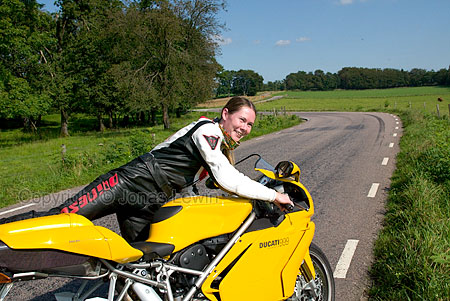
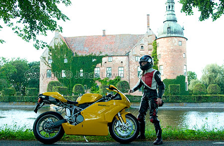

Åsa
|
Asa
just cant get enough of rinding the bike. She even likes riding the bike on
the freeway, which is not one of my favourites. And she is riding with a
constant smile on her face (clearly visible on this picture). On our first trip, we went all across Skåne, just stopping a few kilometers from the east coast due to bad weather. We saw 2 mooses during another trip, and so far I think that we have seen just about all types of weather and road-conditions. We still have some nice roads left before we have to
drive the same roads again. Perhaps next summer. She even likes to drive straight and really fast, to feel and hear the wind. Probably like me, when I was new to bikes. We both agree that curvy roads are still the best (as seen on the top
picture). |